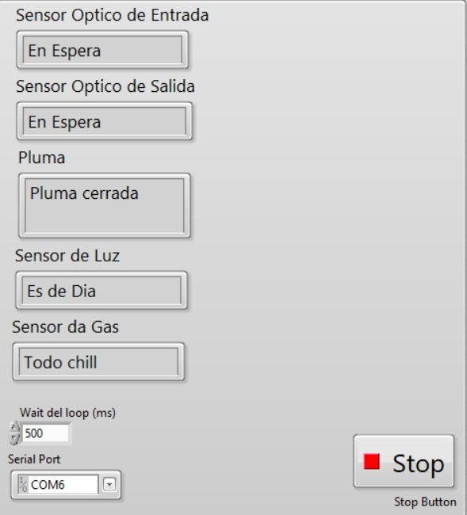
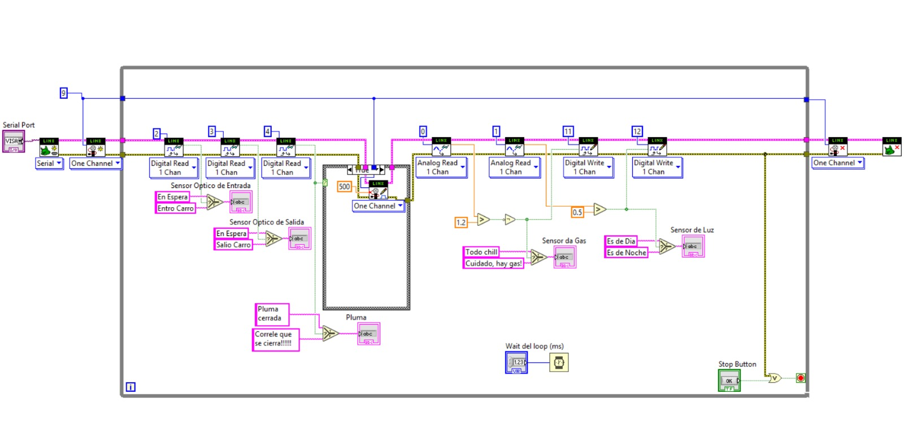
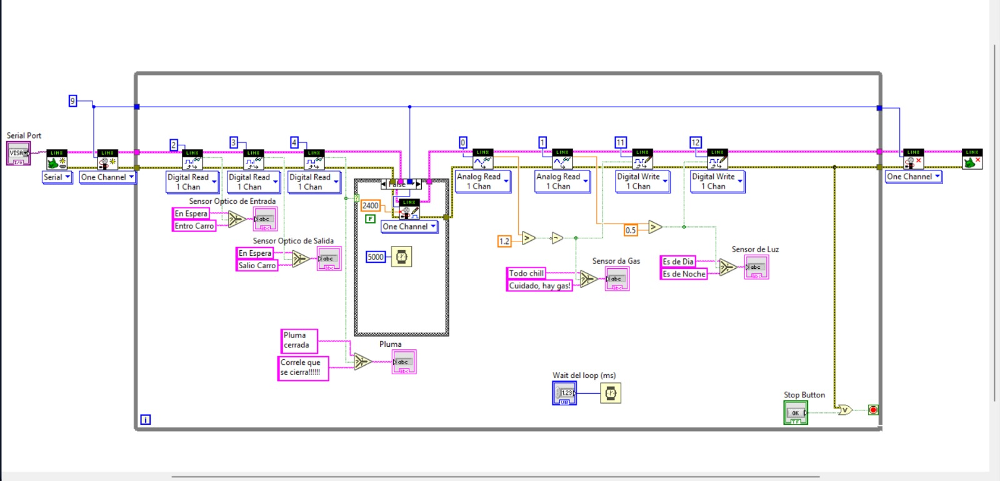
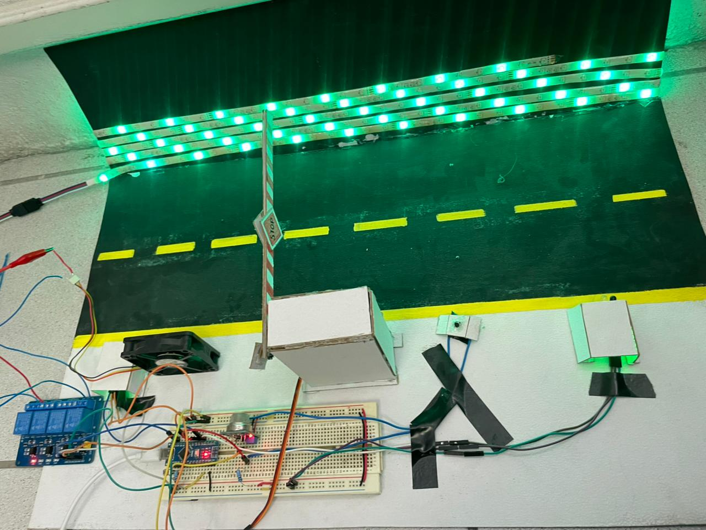

Instituto Tecnológico de Aguascalientes
Sistema automatizado de acceso vehicular con monitoreo ambiental en tiempo real, integrado mediante Arduino y LabVIEW.
El presente proyecto desarrolla un sistema inteligente de control y monitoreo para un acceso vehicular automatizado, utilizando una plataforma Arduino para la adquisición de datos y el control de dispositivos, junto con una interfaz gráfica desarrollada en LabVIEW para la supervisión en tiempo real.
Este trabajo fue realizado dentro de la materia de Industria Inteligente, integrando conceptos relacionados con automatización, comunicación serial, monitoreo de procesos y digitalización de sistemas. El sistema emplea dos sensores ópticos para detectar la entrada y salida de vehículos, accionando una pluma automatizada mediante un servomotor.
El sistema está diseñado para supervisar en tiempo real el estado de diversos sensores y controlar una pluma automatizada que regula el acceso de vehículos a una zona determinada. La comunicación entre Arduino y LabVIEW se realiza mediante el puerto serial, permitiendo la adquisición, procesamiento y visualización de datos de forma continua.
Además del control vehicular, el sistema incorpora un sensor de luz y un sensor de gas para ampliar las capacidades de monitoreo ambiental, generando alertas y accionando actuadores según las condiciones detectadas.
// Haz clic en cada etapa para expandir los detalles
Interactúa con el panel a continuación para explorar el comportamiento del sistema de control vehicular en tiempo real.
Al iniciar la ejecución del programa, LabVIEW establece comunicación con la tarjeta Arduino mediante el toolkit LINX y un puerto serial previamente configurado. Esta etapa crea el enlace entre hardware y software para intercambiar información en tiempo real. Una vez exitosa la conexión, el sistema queda listo para comenzar la adquisición de datos y el control de los dispositivos conectados.
Todo el funcionamiento del sistema se encuentra contenido dentro de un ciclo While Loop, el cual se ejecuta continuamente mientras el usuario no presione el botón Stop. Esta estructura permite que la lectura de sensores, el procesamiento de datos y la actualización de indicadores se realicen de manera permanente durante la operación.
El control de la pluma se realiza mediante una estructura Case con dos posibles estados de funcionamiento:
Cuando el usuario presiona el botón Stop: se detiene la ejecución del While Loop, finaliza la adquisición de datos, se cierran las conexiones establecidas con Arduino y se liberan los recursos del programa. Este procedimiento garantiza un cierre seguro y evita errores de comunicación en futuras ejecuciones.
// Clic en cualquier imagen para ver en pantalla completa




"El desarrollo de este proyecto permitió aplicar de manera práctica la integración de tecnologías de adquisición de datos, monitoreo y control. La combinación de Arduino y LabVIEW facilitó la visualización en tiempo real de las variables del proceso, lo que es fundamental en entornos de Industria Inteligente. La incorporación de sensores ambientales demostró cómo se pueden añadir capas de valor y seguridad a un sistema tradicional de control de acceso."
"Durante la realización de esta práctica, se comprendió la importancia del monitoreo en tiempo real para optimizar procesos automatizados. El diseño de la interfaz en LabVIEW permitió crear un entorno intuitivo para el usuario, mientras que la comunicación serial con Arduino mostró ser una herramienta robusta para la digitalización de sistemas físicos. Este proyecto evidencia cómo las herramientas de la Industria Inteligente pueden emplearse para desarrollar sistemas más seguros y adaptables."
"Se logró identificar la relevancia de la interacción entre sensores, actuadores y plataformas de supervisión. La implementación de la pluma automatizada permitió reproducir un sistema funcional de acceso vehicular, mientras que LabVIEW proporcionó un entorno adecuado para la visualización. La incorporación de sensores ambientales permitió extender las capacidades del proyecto hacia un enfoque de industria moderna."